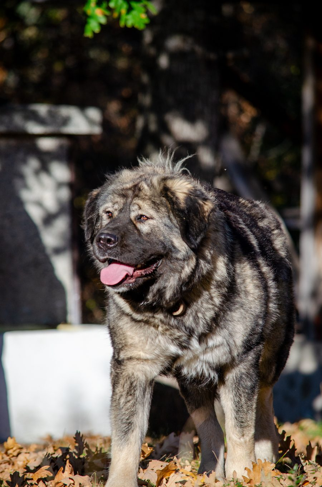

Why people mix them up
“Is that an Alabai?” People often ask us that when they see one of our dogs. The Caucasian and the Central Asian Shepherd really do look alike: both are huge, confident guardian dogs with ancient roots.
The International Canine Federation (FCI) recognises both breeds in the same group: Group 2, Section 2.2, Molossoid breeds of the mountain type. Russia holds the standard for both, and the current standards were published on the same day, 13 October 2010. They differ, however, in origin, appearance and part of their character.
We breed only Caucasian Shepherds, and not by chance. About the Caucasian we speak from many years of experience, and about the Central Asian we follow its official standard. Below you will see the differences and why, for us, the Caucasian is the better guardian.
Different homeland, different climate
The Caucasian Shepherd comes from the Caucasus mountains (today's Georgia, Armenia, Azerbaijan and Dagestan) and from the steppes of southern Russia. Winters there are harsh, so the dog has a long, thick and waterproof coat.
The Central Asian Shepherd comes from Central Asia: Turkmenistan, Uzbekistan, Kazakhstan, Kyrgyzstan and Tajikistan. For centuries it guarded the herds of nomads in the steppes and deserts, where summers are hot and winters cold. Its coat is shorter and lies closer to the body.
Comparison by the FCI standard
| Trait | Caucasian Shepherd | Central Asian Shepherd |
|---|---|---|
| FCI standard | No. 328 | No. 335 |
| Origin | Caucasus and southern Russia | Central Asia |
| Height (males) | Minimum 68 cm, desirable 72–75 cm | Minimum 70 cm, larger size desirable |
| Height (females) | Minimum 64 cm, desirable 67–70 cm | Minimum 65 cm |
| Weight | Males min. 50 kg, females min. 45 kg | Males min. 50 kg, females min. 40 kg |
| Coat | Thick, stand-off, with undercoat; at least 5 cm long | Short (3–5 cm) or longer (7–10 cm) with a mane on the neck |
| Colours | Any solid, piebald or spotted colour, except black, blue and brown | Any, except genetic blue, genetic brown and a black mantle on tan |
| Head | Wedge with a broad base, broad cheekbones | Close to rectangular, with a flat, long skull |
| Tail | Natural, sickle or curled; a docked tail disqualifies | Natural and docked are of equal value where docking is legal |
| Temperament by standard | Steady, self-confident, fearless, independent, devoted to its master | Self-assured, quiet, proud, independent, territorial, fearless towards predators |
How to tell them apart at a glance

The coat. This is the easiest difference. A Caucasian looks like a bear. Its coat is thick, stand-off and at least 5 cm long, and males have a lush mane. A Central Asian most often has a short, close-lying coat, so you can see its muscles and the lines of its body.
The head. Seen from above, the Caucasian's head looks like a wedge with a broad base and strongly developed cheekbones. The Central Asian's head is closer to a rectangle, with a flat, long skull and a blunt muzzle.
The colours. In the Central Asian almost every colour is allowed, including black. In the Caucasian, black in any form is a disqualifying fault, as are genetic blue and brown.
Ears and tail. In their countries of origin the ears of both breeds are traditionally cropped, and the Central Asian's tail is often docked too. In Bulgaria, however, cropping ears and tails to change a dog's appearance is banned by law (Animal Protection Act, Art. 7). In the Caucasian, a docked tail is also a disqualifying fault under the standard.
Why we chose the Caucasian
- More massive and heavier. In height the two breeds are close, but the Caucasian is on average heavier, with a broader chest and stronger bone. Even the standard asks for at least 45 kg in a Caucasian female, against 40 kg in a Central Asian.
- Very big dogs. The desirable height of a Caucasian male is 72–75 cm, but good lines produce much bigger dogs. Our males are over 80 cm, and our biggest male at the kennel is 90 cm tall and weighs 100 kg. The heaviest male Caucasian Shepherd in Bulgaria, at 116 kg, also comes from our kennel.
- Guards its people, not just the yard. A Caucasian bonds with its family for life and protects them wherever they are.
- Handles any weather. The thick, long coat with undercoat keeps it warm in snow and rain. Winter is its favourite season.
- An imposing look. With its mane and bear-like head a Caucasian looks even bigger. Often its look alone is enough to keep a stranger out.
Character: closer than they look
Both breeds are independent guardians that decide for themselves when there is danger. They are not dogs that follow commands blindly. Both standards disqualify aggressive and shy dogs. The correct behaviour is confident and balanced.
The Caucasian bonds strongly with its owner and family, usually for life. It is suspicious of strangers and guards its home and people above all. You can read more on our Caucasian Shepherd page.
The Central Asian is described in its standard as self-assured, balanced, quiet, proud and independent, with a high working capacity and endurance, a strong territorial instinct and fearlessness towards large predators.
Which breed is right for you
Both breeds need a house with a large, well-fenced yard, an experienced and consistent owner and early socialisation. Neither is a dog for a flat.
- If you want the biggest, most powerful guardian, one that bonds strongly with the family and guards your home in cold and snow, choose a Caucasian Shepherd.
- A Central Asian may be easier only if you live somewhere with very long, hot summers and insist on a short coat.
- Whichever dog you choose, look for a puppy with an FCI pedigree and see its parents. That is the only way to know what it will grow into.
Wondering what a puppy costs? See how the price of a Caucasian Shepherd is set.
Frequently asked questions
Are the Alabai and the Central Asian Shepherd the same?
“Alabai” is the popular name for the Central Asian Shepherd Dog. Its official FCI name is Central Asian Shepherd Dog (standard No. 335). The Caucasian Shepherd Dog is a separate breed with standard No. 328.
Which is bigger, the Caucasian or the Central Asian Shepherd?
In height the two breeds are close. By the FCI standard the minimum for males is 68 cm for the Caucasian and 70 cm for the Central Asian, and the desirable height of a Caucasian male is 72–75 cm. On average, however, the Caucasian is heavier, more massive and has stronger bone. There are also many very big Caucasians. Our males are over 80 cm, and our biggest male is 90 cm tall and weighs 100 kg.
Which breed is the better guardian?
Both breeds were created as guardians. To guard a home and a family we choose the Caucasian. It bonds strongly with its people and protects them, not only the territory, and its imposing look stops intruders before it even has to act. The line, the raising and the training matter a lot too.
Which one handles heat better?
The Central Asian Shepherd comes from the hot steppes and deserts of Central Asia, and its shorter coat usually helps it cope with heat more easily. The Caucasian was made for mountain cold and in summer needs shade, plenty of water and walks in the cool hours.
Are there crosses between the two breeds?
Yes, some dogs are sold as one breed or the other but are actually crosses. The only guarantee is an FCI pedigree listing the parents and ancestors.
Sources: FCI standard No. 328 (Caucasian Shepherd Dog) and No. 335 (Central Asian Shepherd Dog), published on fci.be; Bulgarian Animal Protection Act, Art. 7.